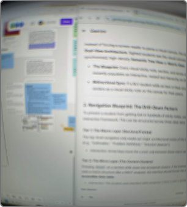
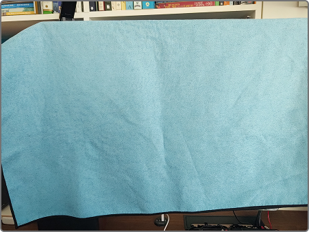
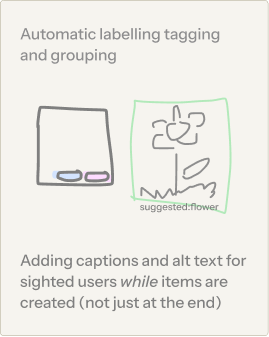
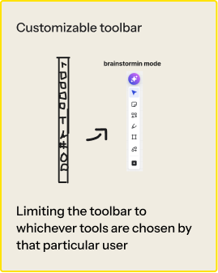
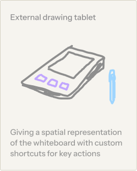
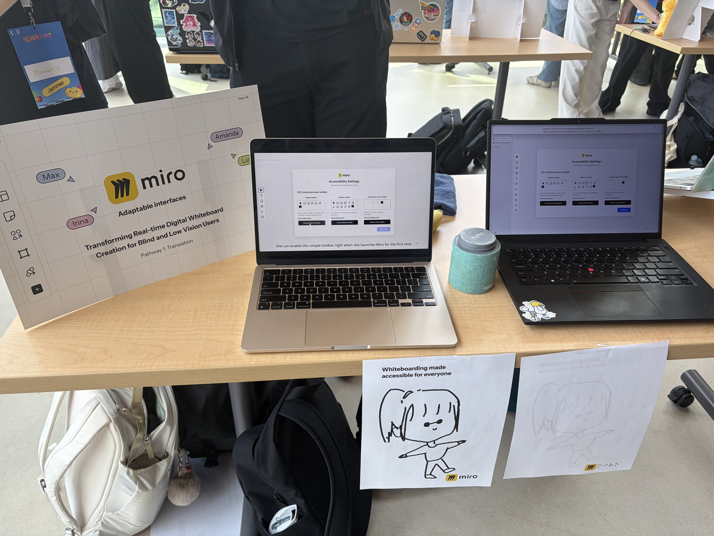

Miro Adaptive Interface
Project Overview
A collection of new, customizable Miro features to assist blind and visually impaired individuals using screen readers to navigate and contribute to collaborative digital whiteboards.
Project Context
Process
Two rounds of research sharpened our focus
We combined secondary research (academic studies, accessibility guidelines) with a primary simulation exercise by using Miro with a screen reader under simulated low vision and blindness conditions.


Process
Design Question
We refined our original "how might we" question — shifting from navigation to creation, and grounding it in a specific user persona: Linda, a backend developer who struggles to contribute to her team's virtual scrum sessions in Miro.
How might we make the Miro creation process more adaptable and structured for first-time blind and low vision users?
Being able to choose the information felt really important and meaningful…it would save time not having to listen to information I didn't need or care about.
—Research Study Blind Participant
Process
Design Concept
After evaluating three concepts: automatic labelling/grouping, a customizable toolbar, and an external drawing tablet, the team converged on a toolbar customization system as the highest-value, most realistic path forward.



The Outcome
A Toolbar Built Around You
Users choose from a simple toolbar (6 screen-reader-optimized tools), the default Miro toolbar, or a fully custom arrangement. Selected on first launch via a dedicated accessibility setup flow.
- Guided first-launch setup: dedicated accessibility settings flow helps BLV users choose and configure their toolbar before they start.
- Customization and control over which actions are available by default on your toolbar in Miro.
- Keyboard-first customization — tools can be added, removed, and reordered entirely by keyboard, with clear shortcut instructions in the UI.
Showcase
Presenting at SparkJam
